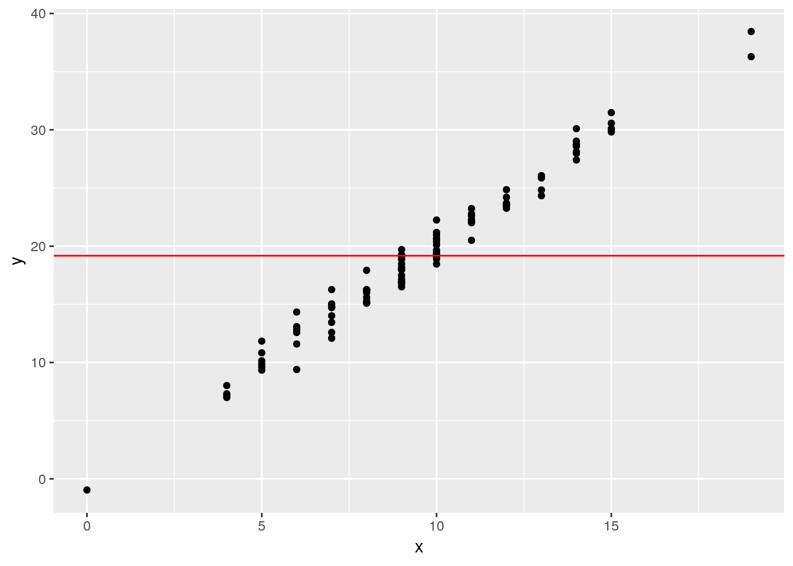

4 Functions
Functions allow you to automate boring tasks so that you don’t have to keep doing the same thing over and over again. There are several advantages of this.
- As stated above, it is faster for you.
- When something changes (e.g., a reviewer wants you to exclude outliers), you only need to change your code in one place, rather than several.
- You eliminate the risk of “copy-and-paste” mistakes.
This chapter covers the basics of function construction and use.
4.1 Basic Example
x <- 1:10
y <- 2:20
z <- 3:34
# Obscure reviewer request
x <- x/2
x <- sqrt(x)
x <- round(x)
y <- y/2
y <- sqrt(y)
y <- round(x)
z <- z/2
z <- sqrt(z)
z <- round(z)4.2 Anatomy of an R function
Making functions speeds up the process and makes it safer. To make a function, we need to use the function() command, assign it to a name, provide potential parameters, then give it code to execute.
reviewer_transformation <- function(vals) {
vals <- vals/2
vals <- sqrt(vals)
vals <- round(vals)
vals
}
# Obscure reviewer request
x <- 1:10
x <- x/2
x <- sqrt(x)
x <- round(x)
x## [1] 1 1 1 1 2 2 2 2 2 2other_x <- 1:10
transformed_x <- reviewer_transformation(other_x)x## [1] 1 1 1 1 2 2 2 2 2 2- Name
- Parameters/Arguments
- Defaults
- Code
- Return values
\[ r = \frac{\text{cov}(x, y)}{\sigma_x\sigma_y} \]
# set.seed(314159)
x <- 1:10
y <- x*rpois(n = 10, lambda = 3)
w <- 1:20
u <- runif(n = 20)
cor(x, y)## [1] 0.7117408cov(x, y)/(sd(x)*sd(y))## [1] 0.7117408print('---')## [1] "---"correlation <- function(a, b) {
cov(a, b)/(sd(a)*sd(b))
}
cor(w, u)## [1] -0.007485897correlation(w, u)## [1] -0.0074858974.3 Base R functions
- Basic stat functions
- Random numbers!
x <- rpois(100, 10)
y <- 2*x + rnorm(100)
df <- data.frame(x, y)
library(ggplot2)
ggplot(df, aes(x, y)) +
geom_point() +
geom_hline(yintercept = mean(y), color = 'red')
Setting the random seed
paste()andpaste0()
4.3.1 Scoping
- What happens inside a function, stays inside a function
- Discussion of shadow variables
4.3.2 Conditional execution
set.seed(314159)
x <- 1:10
y <- x*rpois(n = 10, lambda = 3)
x[4] <- 1
y[5] <- 2
correlation <- function(a, b) {
if(any(is.na(a)) & !any(is.na(b))){
return('Only one missing data issue.')
}
else if(any(is.na(a)) & any(is.na(b))){
return('You have missing data butthead!')
} else {
cov(a, b)/(sd(a)*sd(b))
}
}
cor(x, y)## [1] 0.8438correlation(a = x, b = y)## [1] 0.8438if()
if()/else()
else if()
ifelse()
4.3.3 the return() command
————— Part II —————–
4.4 Pipes
Sometimes (often) it is useful to execute several functions in a row, using the answer from the last function as the input for the next function. But this can make your code redundant and a little unclear.
reviewer_transformation <- function(vals) {
vals <- vals/2
vals <- sqrt(vals)
vals <- round(vals)
vals
}
reviewer_transformation2 <- function(vals) {
round(sqrt(vals/2))
}
reviewer_transformation_pipe <- function(vals) {
vals %>%
magrittr::divide_by(2) %>%
sqrt() %>%
round()
}
x <- 1:10
reviewer_transformation(x)## [1] 1 1 1 1 2 2 2 2 2 2reviewer_transformation2(x)## [1] 1 1 1 1 2 2 2 2 2 2reviewer_transformation_pipe(x)## [1] 1 1 1 1 2 2 2 2 2 2library(magrittr)##
## Attaching package: 'magrittr'## The following object is masked from 'package:purrr':
##
## set_names## The following object is masked from 'package:tidyr':
##
## extractfun1 <- function(x){
x *2
}
fun2 <- function(y) {
y - 3
}
fun2(fun1(x))## [1] -1 1 3 5 7 9 11 13 15 17x %>%
fun1() %>%
fun2()## [1] -1 1 3 5 7 9 11 13 15 17To address this, we use pipes.
4.4.1 Basic usage
The %>% operator (pronounced “pipe”) takes whatever is on its left-hand-side (LHS) and applies it to the first parameter of the function listed on the right-hand-side. Install and load the magrittr package to use it.
install.packages('magrittr')
library(magrittr)4.4.2 Sending the LHS to another parameter
But what do I do when I need the LHS output to go to another parameter in the RHS function? I use the . to remind the RHS function I want the LHS output to go to a different place.
4.4.3 Convenient magrittr functions
4.5 More talk about the help files
4.6 Functions from other packages
- I can import functions from another package by…
- What if I only want to import once?
- Namespace considerations